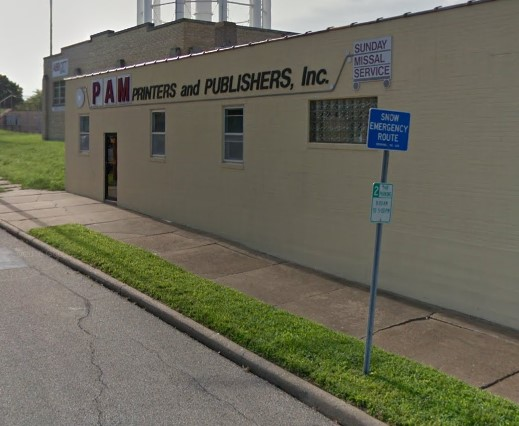
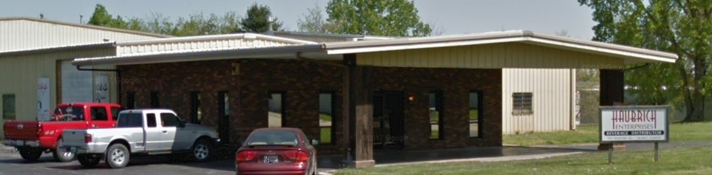

About Me
I began my career back at two family businesses. P.A.M. Printers/Sunday Missal Service and Haubrich Enterprise.

P.A.M. Printers - was a local printing company along with Sunday Missal Service - which published the Catholic Missal. This business was started by my Great Grandfather in his garage and grew into
a business which sold and shipped to the Catholic churches all around the USA.
Haubrich Enterprise is a local beer distributor in Quincy, IL.
Here I sat on the Board of Directors at both businesses as well as integrated technology into the business.
For 10 years I created websites. I sat down with customers and took notes pertaining to customers, looks, products,
and everything you could think about that would be asked when developing a new website. I then went on to create the site using different technologies: HTML, CSS, javascript, angular js.
I am now a Developer in Java/C++. Before this I was a webmaster/Executive of a family business. I created a website and made an online

environment where people all around the USA could go online and download online versions of our books. I did this to eliminate customer
complaints. My Father and I sold out of these businesses(Haubrich Ent and P.A.M. Printers/Sunday Missal) in 2011, which is when I went back to school.
I graduated in 2014. Before this I did web design and integrated technology into the businesses.
I began my Java programming career in 2015 after graduating in 2014 with General Dynamics.